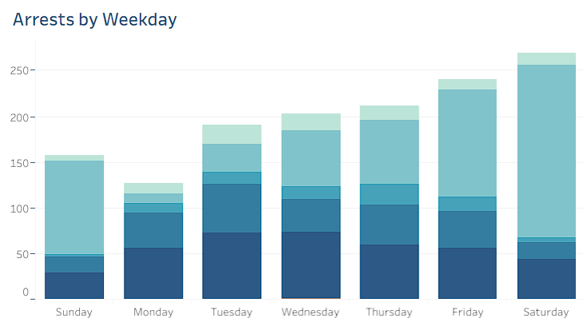
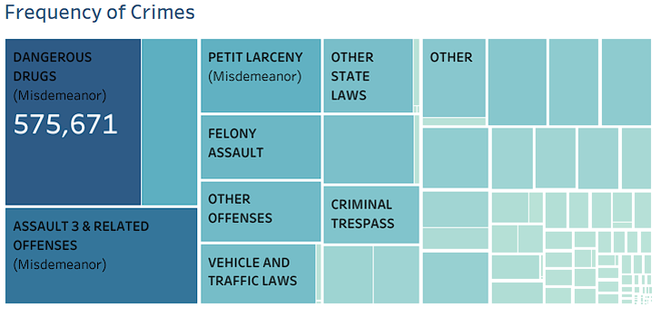
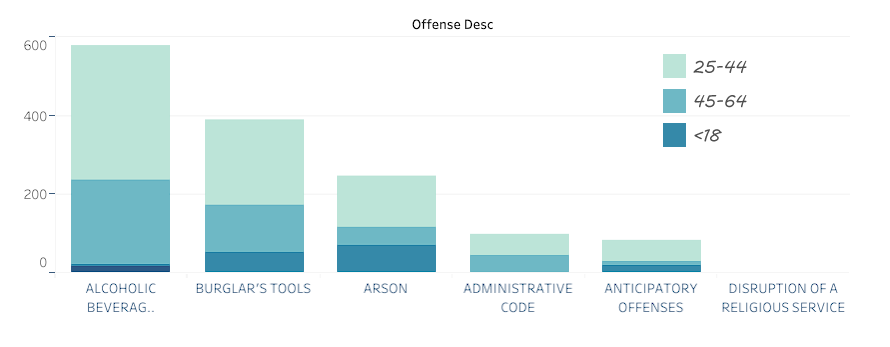
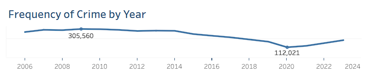
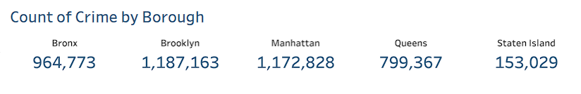

NYPD Budget Optimzation Analysis
Introduction
To start off, I was curious as to how the New York Police Department (NYPD) decides on their budgeting decisions. I decided to take this problem into my own hands and find key insights into how the NYPD should allocate their resources based on needs and crime trends. Understanding NYPD resource allocation based on crime trends is important because it directly impacts public safety, ensures the efficient use of resources, and fosters data-driven decision-making.
Research Questions
The questions I wanted to answer were:
- What is the frequency of arrests by week of the day?
- Where are there potential crime hotspots in NYC?
- What is the frequency of different crimes?
- How are crimes split by Age Group?
- What does the Year over Year number of crimes per year look like?
- What is the number of crimes by Borough?
These questions help answer the question of budget allocation as they provide trends and insights for the NYPD to prioritize.
Finding Data Sources
To find the appropriate datasets, I visited the official New York City website for their open public datasets.
With these datasets, I had 19 columns and over 5.7 million records to analyze.
Data Cleaning
To process this data, I used Python and the pandas library due to the large size of the datasets.
The data cleaning steps included:
- Concatenating both datasets
- Removing duplicates
- Removing rows with blank values
- Dropping unnecessary columns
- Renaming column names
- Renaming values
- Cleaning data values for specific columns (e.g., AGE_GROUP)
- Exporting the cleaned and combined dataset into a CSV file for analysis.
Data Exploration / Visualization
I chose Tableau for data exploration, as the visualizations were instrumental in answering the research questions.
The Tableau Dashboard can be found here: NYPD Crime Statistics 2006-2023 Dashboard
Findings & Insights
Arrest Trends by Weekday
- Higher Arrests on Fridays and Saturdays: when visualizing the number of arrests by weekday, it seems that Fridays and Saturdays have the highest number of arrests. The reason for this will need to be further investigated but in general, allocating more police to patrol higher crime rate areas using the crime heatmap will be a good idea for public safety

Treemap on Frequency of Crime
- Prevalent Dangerous Drug Crimes: the highest frequency of crimes based on the summation of all years appears to be dangerous drugs. Based on this data, to tackle the issue of ensuring the safety of both parties, there are many different approaches but one way is providing overdose prevention education for both police and "dangerous drug" perpetrators to ensure nothing fatal happens

Recurring crimes by Age Group
- Most Crimes Committed by 25-44 Age Group: recurring crimes by age group shows that the 25-44 age group commits more crimes than any other age group. The reason for this will also need to be investigated further, but overall allocating more resources into hot spot crime areas related to 25-44 year old perpetrators are high can be effective in reducing crime

Frequency of Crime BY Year
- 2020 Crime Drop Due to Pandemic: looking at the frequency of crime by year, there appears to be a steep drop in crime in 2020. The reason for this is definitely the pandemic when NYC shut down in 2020. However after the city started opening up again, crime began to rise, showing that even though the effects of closing down the city decreased the frequency of crime, it is not a long term or effective solution to solve the problem of crime

Crime Distribution by Borough
- Brooklyn and Manhattan with Highest Crime Rates: the count of crime by borough shows that Brooklyn and manhattan have the most crime and staten island has the least. More information regarding the ratio between the number of crime and number of people living in each borough will need to be uncovered to decide how much more or less resource the NYPD should allocate for each borough.

Summary
These insights can guide the NYPD in deploying resources more effectively, targeting high-crime days, addressing prevalent crime types, and focusing on key age groups and boroughs.
View the Tableau Dashboard Here: NYPD Crime Statistics 2006 - 2023